One Play album ▾ button, and the ⋯ beside it
Four variants, drawn side by side at 360 dp in English, Danish and Faroese, plus the desktop. Round slug album-play-button, 2026-10-23. The pictures are in png/ beside this file.
What is fixed
The shape of the row is the owner’s, and no variant varies it:
I would like the Play Album and Shuffle to merge into a single button, so it says Play album, but with a down arrow on the right side of that button, so shuffle is available under that sub-menu. So it’s clear we have 1 button for playing the whole album, shuffling it and the Play extras etc. These could be grouped by separators within the dropdown, and then we have this … button on the right of it which has Add to playlist and probably some more buttons in the future
- One split button, labelled Play album, with a ▾ on its right. The main part plays the album.
- The ▾ opens one menu holding every way of playing it, grouped by separators.
- A ⋯ to its right holds Add to playlist… (playlists spec FR-6), and is the home for album actions that join it later.
- No separate Shuffle button.
What ships today, so the variants can be judged against it
Read out of ravilo-music.js:239-253 and ravilo-music.css:412-424, not from memory. R373 today draws two split buttons, and both ▾s open the same menu:
Play album ▾ (primary) and Shuffle ▾ as split buttons. The ▾ menu: Play album ({n} songs · the official order) · Play album + extras ({n} songs · extras, then the B-sides), the current one ticked. The pick is remembered per album, per device, relabels the Play button (Play album + extras), and both buttons follow it; picking from the menu also starts playback. FR-R373-2 point 3
Three consequences, because they decide what the menu can honestly hold:
- There is one axis, the order — the official album, or the album with its extras and B-sides. It is remembered per album, per device.
- Shuffle is not a second pick. It shuffles inside whichever order is chosen. That is why Shuffle + extras has no shipped string — today it is not a row. Every variant below needs one; it is drafted as ed.shuffle_extras and marked DRAFT wherever it appears.
- The two shipped rows carry no glyph, because both of them are Play. Once one menu holds the shuffles as well, the glyph is what tells the two kinds of row apart at a glance, so every variant adds one.
Point 1 of the same FR also puts + {k} extra(s) in the header. Every editions frame here draws it, so that an album with extras is never the same picture as one without.
The first finding: with the menu shut, the four variants are one picture
The owner has fixed the row. What is left to choose is what the menu holds and whether the main part is relabelled afterwards — and with the menu shut, those are invisible. The first render drew all sixteen shut-menu frames and compared them pixel by pixel:
No two of the four differ by more than 35 pixels out of 280 800, at a maximum channel delta of 27 out of 255, and every one of those pixels is in a 20 px band at the frame’s right edge where the page-tint gradient dithers. Nothing in the layout differs at all.
So the shut-menu states are drawn once and their file names say which variants they are. Four copies of one picture would not have proved that; it would have hidden which two frames there are to compare.
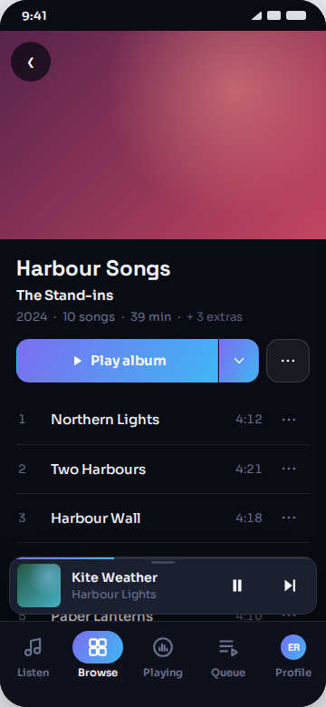
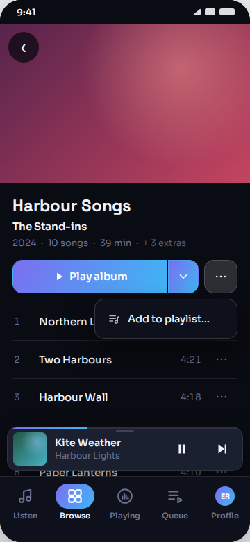
The second finding: the width question is answered, and it is a yes
The previous round found that R373’s row does not fit a 360 dp phone: with two split buttons, Shuffle truncated to Sh… and the relabelled primary to Play albu…, in English. One split button removes that entirely.
The row is 324 dp of content: the ⋯ takes 48, the gap 8, the ▾ half 44, leaving 224 dp for the glyph, its gap, 10 px of padding each side, and the label. The longest label in the product is Danish:
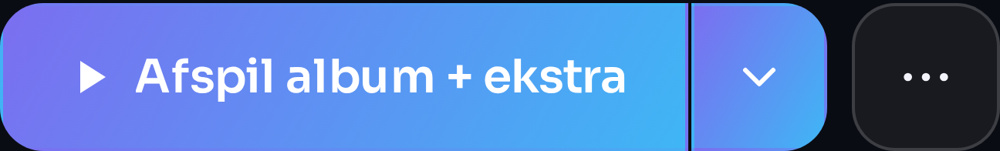
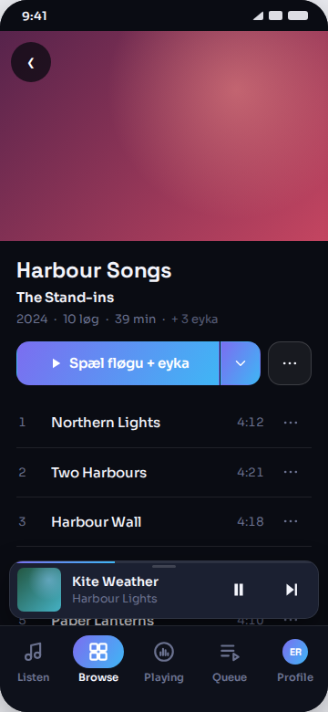
So R373’s relabel survives the merge in all three languages. That removes the reason the previous round had for dropping it, and it is why three of the four variants keep it.
The four variants
They differ in two things and nothing else: whether the main part relabels after a pick, and how the menu groups its four rows.
| main part after a pick | menu grouping | ticked? | R373’s subtitles | new strings | |
|---|---|---|---|---|---|
| A the label never changes | never changes | by order | no | dropped | 1 |
| B relabels · by order | becomes the pick | by order (the owner’s own example) | yes | kept | 1 |
| C relabels · by action recommended | becomes the pick | by action | yes | kept | 1 |
| D relabels · the menu names itself | becomes the pick | by order, under a heading | yes | kept | 1 |
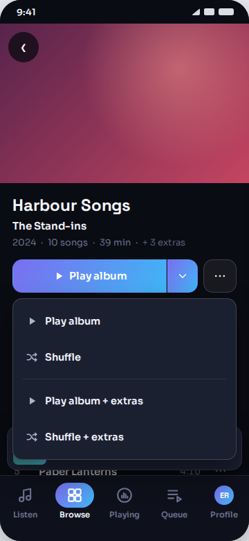
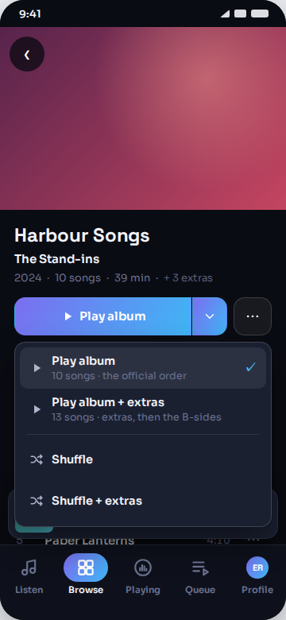
A — the label never changes
It is the only variant that changes shipped behaviour. R373 remembers the order per album per device and says so on the button; A stops doing both. A listener who wants the extras asks for them again on every visit, on every album, and the button never says what it will play. The two subtitles go with it, so the menu’s four rows become four bare labels.
Against that: it is the simplest thing to build and the calmest menu on the page, and nothing in it can ever disagree with anything else. If the remembered pick is judged not to have earned its keep, A is the honest way to drop it — but that is a behaviour decision, not a drawing one, and it is not this round’s to make.
B — relabels, grouped by order
The owner’s own example, drawn as written. Each group is self-contained: here is the official album, and the two things you can do with it; then the same for the album with its extras. A listener who wants to shuffle the extras finds that row under the heading that already says extras, which is the clearest mental model of the four.
Its one cost is visible rather than logical: the subtitled rows and the bare ones alternate, so the menu reads tall-short-tall-short and the ✓ sits on a row a head taller than the one under it.
C — relabels, grouped by action recommended
Its first group is R373’s shipped menu, unchanged, row for row, subtitle for subtitle, tick and all — the two shuffles simply join underneath a separator. A listener who knows today’s menu finds it where it was, with two rows added; nothing they already learned moves.
It is also the calmest of the four to look at, because the two tall rows pair up and the two short ones pair up instead of alternating. And it is the only grouping in which the ✓ cannot be misread: both ticked-eligible rows are adjacent and both are Play, so the tick plainly marks an order, not an action.
Against it: the order a shuffle row uses is carried only by its words (Shuffle vs Shuffle + extras), where B puts it in the grouping as well. That is the trade, and it is the owner’s to make — B is his own example and I have not treated that lightly.
D — relabels, the menu names itself
B plus a heading, and the heading costs no new string: ed.more_play is shipped in all three languages and is already the accessible name a screen reader gives this exact ▾. Drawing it answers what is this menu? once, which matters more now that one menu holds everything rather than two menus holding one thing each.
It costs 30 px, and at 360 dp that is exactly the clearance the menu had:
And on a plain album the heading is all that is left of D, sitting over two rows:
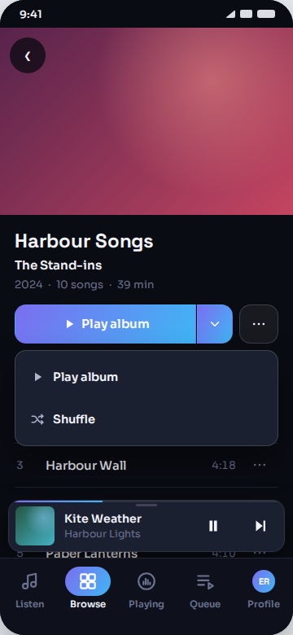
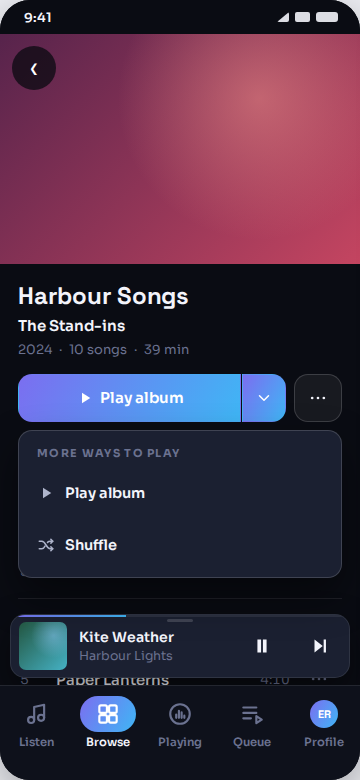
The plain album
A plain album has one order, so it has nothing to remember, nothing to tick and nothing to subtitle — every one of the three things the variants differ in falls away, and A, B, C and D draw the same plain album. Only D’s heading survives onto it.
Every language, every skin
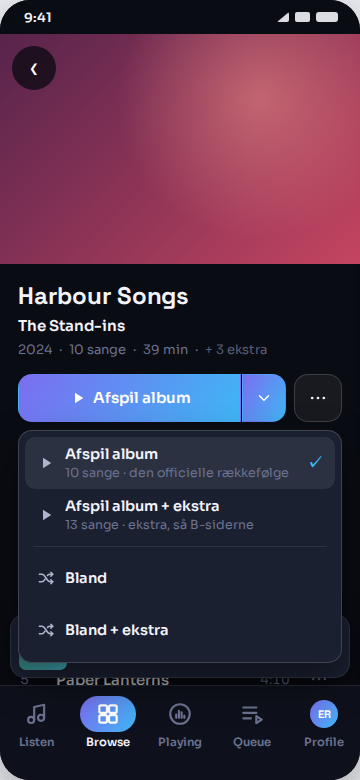
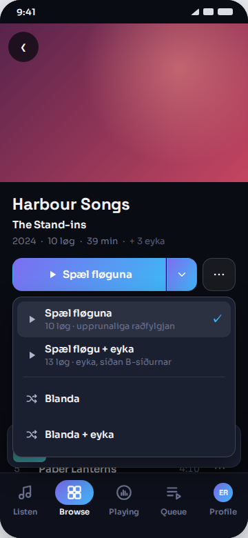
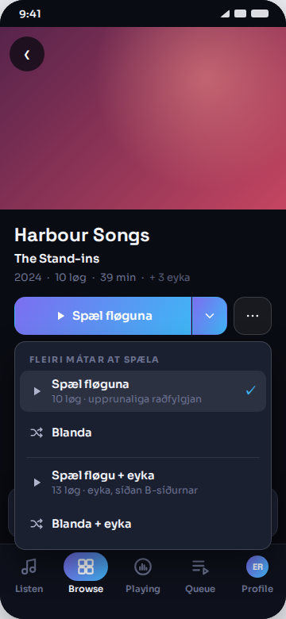
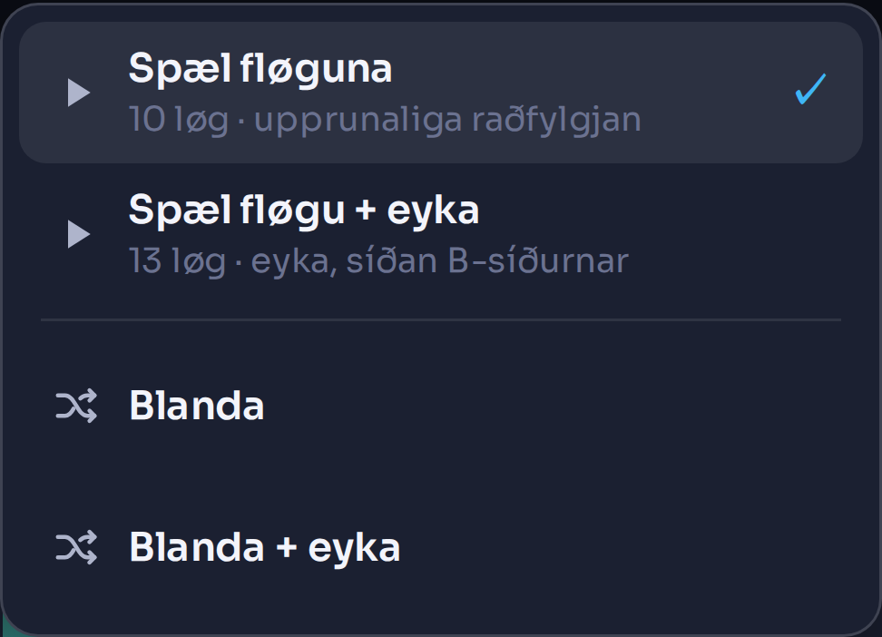
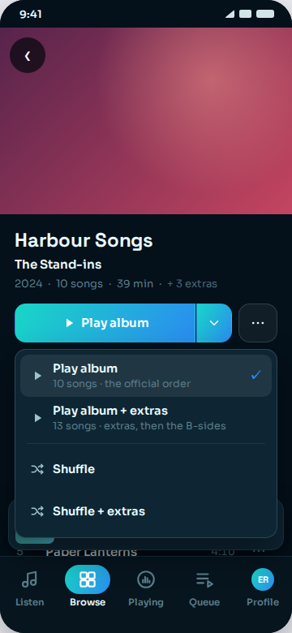
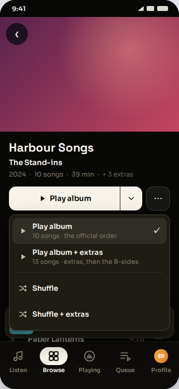
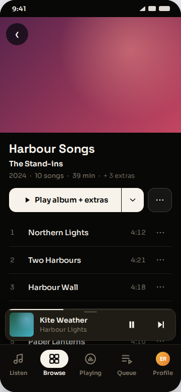
The desktop
The desktop has room for two buttons, but the owner asked for one, so the desktop header is drawn in the same shape rather than letting the two surfaces disagree. With the menu shut it is one picture for all four variants, exactly as on the phone.
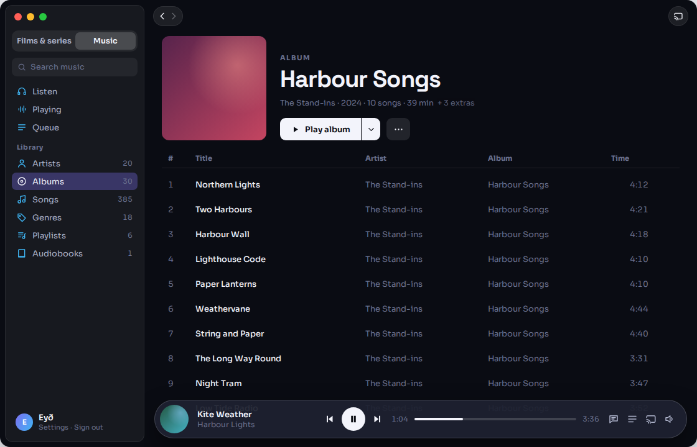
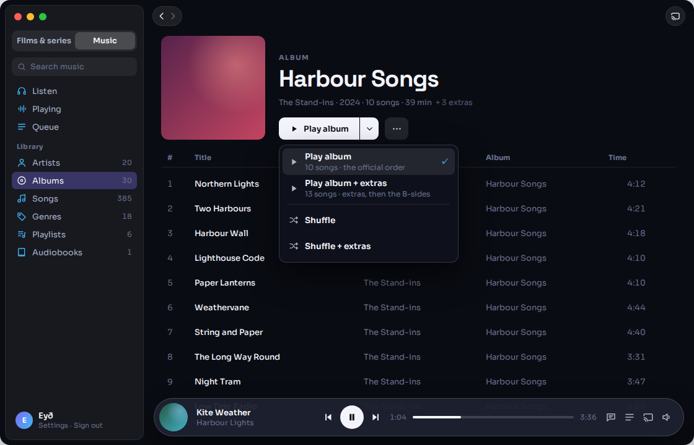
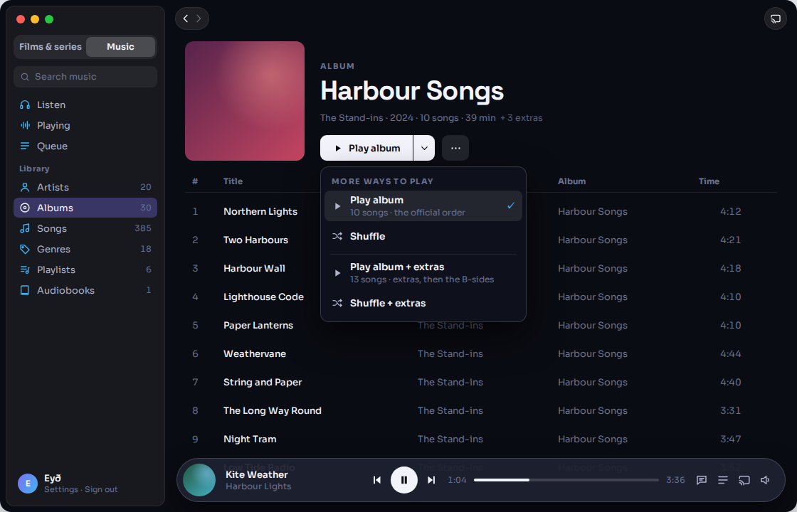
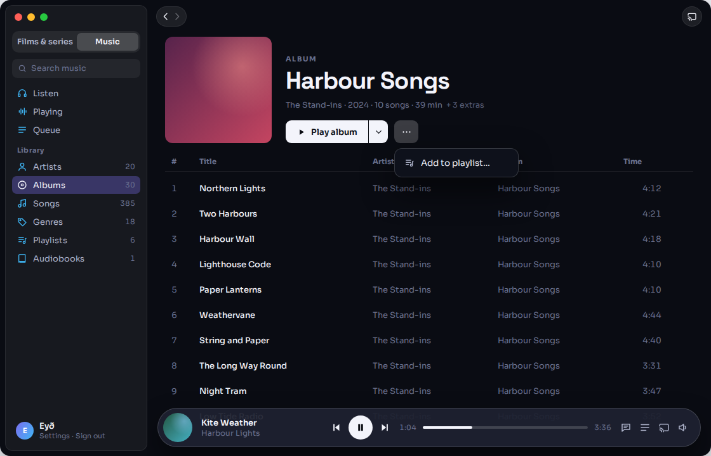
Two things the pictures found that are nobody’s variant
1 · The split paints its gradient twice production change
Each half of the shipped split carries background: var(--grad) of its own, so a 120° gradient is painted twice: the main part runs purple → cyan and the 44 px ▾ beside it starts again at purple. It is in R373’s row today, but today the main part is one of two split buttons and about 150 px wide, so the restart is small. The owner’s single button is 268 px, the gradient travels much further, and the ▾ reads as a lighter tab bolted to the end.
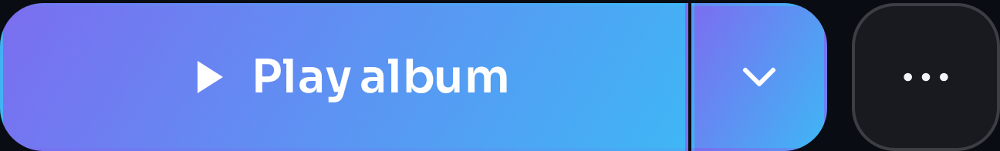
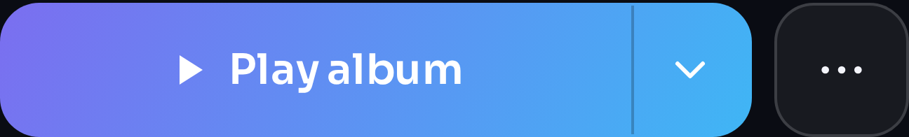
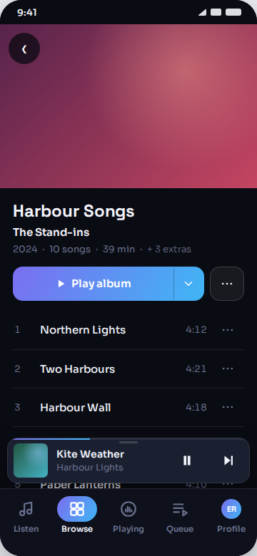
2 · A four-row menu lands on the mini player
Shipped .re-menu is z-index: 5, under the mini player (71) and the bottom bar (72). That is harmless today because the menu has two rows and stops about 90 px short of the player. Every variant here has four, and in the first render the fourth row — the one the owner asked for — was painted underneath the mini player and could not be seen at all. Drawn at z-index: 75, so the open menu covers both.
It still lands on the mini player rather than beside it, and the player’s ends show past the menu’s edges. A scrim, as the shipped sheets use, is the other way to draw it. Raised as a question rather than drawn, because it is the same answer for all four variants.
Decided in this round, and visible in every frame
| What | Drawn as | Why |
|---|---|---|
| A glyph on every menu row | play ▸ / shuffle ⤬, 18 px, --ink-soft | Today’s two rows need none — both are Play. One menu holding both kinds does. |
| Menu width | the full 324 dp of content, not the shipped min(290px,100%) | The glyph column costs the row 28 px, and in Danish that is exactly the difference between a one-line subtitle and a wrapped one. |
| The ✓ | on the Play row whose order is remembered; never on a shuffle row | Nothing in R373 remembers a shuffle. A tick on one would claim otherwise. |
| A plain album’s menu | no subtitle, no tick, in every variant | A subtitle exists to tell two orders apart. A plain album has one. |
| The desktop ⋯’s menu | hung from the button | The linked round anchors it to the header block’s right edge, which here put it 120 px away from the ⋯ it came from. |
New strings
| Key | en | da | fo | |
|---|---|---|---|---|
| ed.shuffle_extras | Shuffle + extras | Bland + ekstra | Blanda + eyka | DRAFT — every variant needs it |
That is the whole string cost. Everything else in every frame is shipped: ed.play_album, ed.play_extras, ed.sub_album, ed.sub_extras, ed.n_extras, music.shuffle, music.add_playlist, and for D ed.more_play. Danish and Faroese are read out of i18n/da.json and i18n/fo.json at their shipped values, because the shipped file wins wherever a string already exists.
Still open — for Bárður, not for the drawing
- Does picking a shuffle row move the remembered order? If a listener picks Shuffle + extras, does the main part relabel to Play album + extras? Drawn as no — the ✓ and the relabel follow the two Play rows only — but R373 says the pick is what both buttons follow, and a shuffle row now carries an order in its name.
- A plain album’s button becomes Play album, where it says Play today.
- The open menu lands on the mini player. Over it, as drawn, or with a scrim?
- The gradient seam — fix in production, or leave as shipped?
- {k}, the extras count, drawn as + 3 extras, and 13 as the extras row’s subtitle count. The shipped subtitle counts official + extras + B-sides; this stand-in album draws no B-sides, so 13 is 10 + 3 and would be larger on a real album. Both are stand-ins the previous round already asked for.